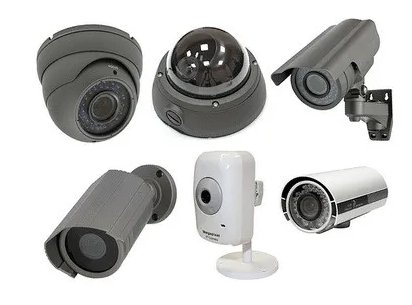

- Bul belgi boyınsha video kameralar eki túrge bólinedi:
- Analoglı
- Cifrlı
Analoglı
5.1 -súwret Analoglı kameralar
Analoglı signal hár qıylı úskeneler arqalı oqıladı, sebebi ol ápiwayı televizordıń signalı PAL yaki NTSC siyaqlı qálegen televizor arqalı qabıllanadı.
- Analoglı úskenelerdiń qolaylıqları:
- Joqarı dárejedegi isenimlilikke iye.
- Ornatıw, qosıw hám sazlaw ápiwayılıǵı.
- Translyaciya dawamında úzliksiz.
- Bahası arzan.
- Hár túrli islepshıǵıwshılardıń sistemaları menen mas keliwi.
- Dawıs jazıw ushın mikrofonlar menen komplektlengen.
- Kemshilikleri:
- Sırtqı aralasıwlardan qorǵalmaǵan.
- Signaldı tek kabel arqalı uzatıwı.
- Arnawlı bolmaǵan kabel arqalı qosılsa tez- tez úziliske ushıraydı.
- Video signaldı internet arqalı uzata almaydı, PKǵa jalǵana almaydı.
- Súwretiniń sıpatınıń tómenligi.
Cifrlı
Cifrlı úskeneleriniń islew tártibi analoglı úskeneleriniń islew tártibinen ayırmashlıǵı video signaldıń ciflıǵa arnawlı anologo-cifrlı qayta islewshi arqalı bar bolǵan video formatlardıń birine qısılıp jıynalǵan túrde aylanadı, kóbinese JPEG, MPEG-4 hám H.264 format qollanıladı.
5.2 -súwret cifrlı video kameralar
Cifrlı video kameranıń quramına operativ hám turaqlı yad, WI FI-modul hám tarmaqlı interfeys Ethernet kiredi. Analoglı úskenelerge qaraǵanda cifrlı úskeneler video signaldıń ornına cifrlı maǵlıwmatlar aǵımı jiberiledi, bular internet arqalı ańsat uzatıladı. Elektr azıqlanıw kabel(esilgen juplıq) arqalı PoE texnologiya járdeminde ámelge asırıladı. Olar úlken seziwsheńlikke kóp eseli zumǵa iye. Cifrlı maǵlıwmatlardıń saqlanıwı ápiwayı hám ol ańsat qálegenshe qayta islenedi.
- Qolaylıqları:
- Mikrafon hám dinamika menen úskenelestirilgen, sol sebepli dawıslardı jazıwǵa, basqa úskenelerdi jalǵamay basqa belgıli bir aralıqtaǵı adamlar menen baylanısa aladı.
- Kóshelerde hám imaratlar ishinde paydalanıwǵa boladı.
- Processor, operativka hám programmalıq támiynatqa iye, sol sebepli cikllı túrde jazıp turadı.
- Háreket datchigine iye mini kameralardı sonday sazlawǵa boladı olar datchik sezgennen soń iske túsedi.
- Joqarı dáreje sırtqı tásirlerden qorǵalǵan.
- Kemshilikleri:
- Bahasınıń qımbatlıǵı.
- Kameraǵa jazǵanda az muǵdardaǵı video jazıwlardıń fragmenti ótedi.
AHD kameralar
AHD úskenelerinde analoglı hám cifrlı túrde kameralardıń jetiskenlikleri jaqsı birlestirilgen. Olar jaqarı dárejedegi matrica menen táminlaengen bolıp sıpatlı súwretlerdi 720p hám HD 1080p formatında túsiredi. Bul túrdegi kameralar 500m shekem qashıqlıqta jaylasqan obektlerdı sıpatlı súwretke aladı.
5.3 -súwret AHD kameralar
WI FI video kameralar
WI FI sımsız kanalı járdeminde video signallar uzatńladı, olar arqalı súwret kompyuterge, router hám zamanagoy mobil úskenelerge shıǵadı. Video jazıw ishki qattı PK diskine yaki mobil gadjetine jazıladı, yaki tarmaqqa router arqalı uzatıladı.
5.4 -súwret WI FI video kameralar
Saqlaw apparatlı avtonom video kameralar
Akkumlyator yaki batareykalar menen táminlenedi. Jazıw waqtın uzaytiw ushın zaryadlaw úskenelerinen paydalanıwǵa boladı, bular aqralı olardıń tiykarǵı kemshiliginen qutıladı-yaǵnıy avtonom jumıs islew waqtınıń qısqalıǵınan (1-4saat). Bul túrdegi úskeneler bolıp atırǵan waqiyanı CD diskke yaki fleshkaǵa jazadı. Soń video jazıwdı kórip shıǵıw ushın sheship alınatuǵun saqlaǵıshtı kompyuterge jalǵap, kerekli video fayldı mediaproigrovatelge jiberedi.
5.5 -súwret Saqlaw apparatlı avtonom video kameralar
Bul kameralardıń qolaylıńı olardıń kishkene bolǵanlıǵı hám sımsız islewi, bular jasırın túrde obektlerdı túsiriwge qolaylı.
Bul túrdegi video kameralar eń kishkene kólemli, sonıń ushın islep shıǵarıwshılar olardı korpussız variantta islep shıǵaradı. Kóleminiń kishkene bolǵanlıǵı sebepli bul úskene xana ishindegi interer elementlerine ornatıwǵa boladı (rozetka, lyustra h.t.b.). Mikrokameralar akkumlyatorlardan hám bloklardan azıqlanadı.
Barlıq video kameralar, bul joqarı dárejedegi texnologik apparatura, olar tómendegilerden turadı:
-Obektiv, linzalardan ibarat bolıp, súwretti fotoqabillawshıǵa(matricaǵa) fokuslandırıwshı.
-Matricalardan-kórinislerdi túsiriwshi hám olardı elektr signalǵa qayta islewshi fotoqabıllawshılardan.
-Videoprocessorlardan-matricalardan keletuǵun signallardı video signalǵa qayta islewin, soń kabel arqalı yaki WI FI dan ekranǵa beriliwin támiyinlewshi.
-Infraqızıl jaqtılandırıwdan, obektlerdi túnde túsiriw imkaniyatın beriwshi, taǵıda háreketleniw hám dawıs datchiklerinen. Bular úskeneniń háreketleniw radiusında hár qıylı obektlerdiń payda bolǵan waqtında avtomat túrde iske qosılıwın támiyinleydi.
- Tiykarǵı parametrler:
- Signaldı qayta islew metodı (analoglı yaki cifrlı).
- Kórinis maydanı matrica ólshemine baylanıslı.
- Kórinis ólshemleri.
- Sezgirlik (Jaqtılıq dárejesi)
- Elektr quwatlandırıw túri (akkumlyatorlardan yaki quwatlandırıw adapterlarınan).
- Baylanıs túri (Sım yaki WI FI modul) h.t.b.
1. Analoglı video kameralar qanday kamerelar?
2. Cifrlı video kameralar qanday kamerelar?
3. Analoglı hám cifrlı video kameralar dıń ayırmashlıǵı nede?
4. AHD kameralar qanday kamerelar?
5. WI FI video kameralar qanday kamerelar?
6. Saqlaw apparatlı avtonom video kameralar qanday kamerelar?
7. Mikrokameralar qanday kamerelar?